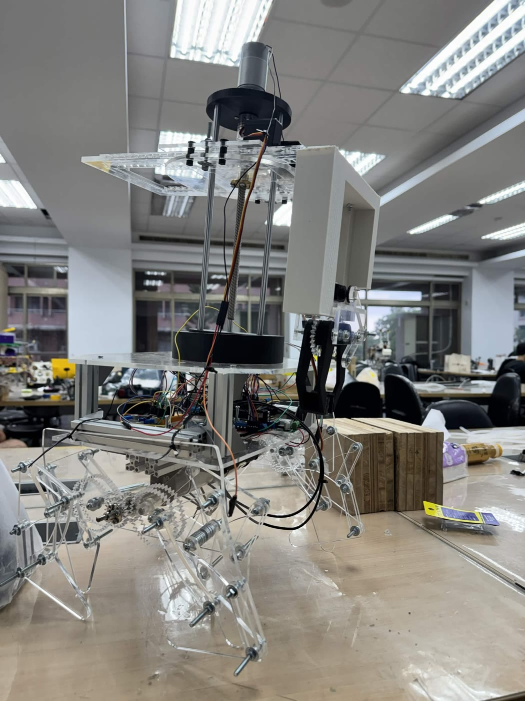
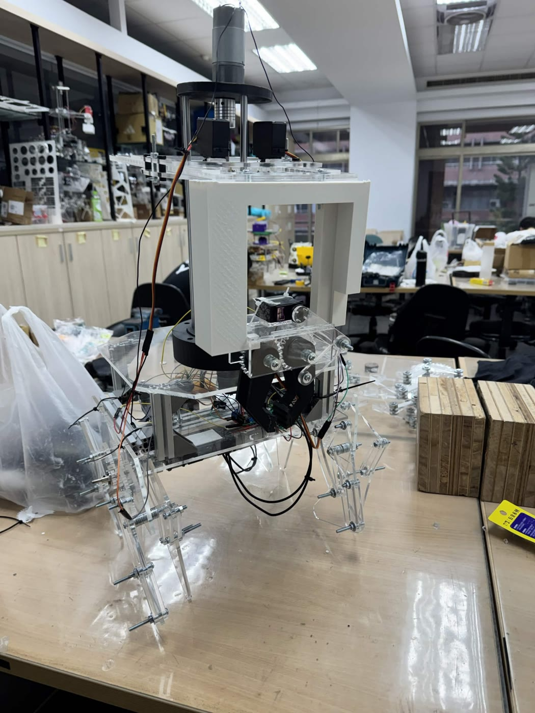
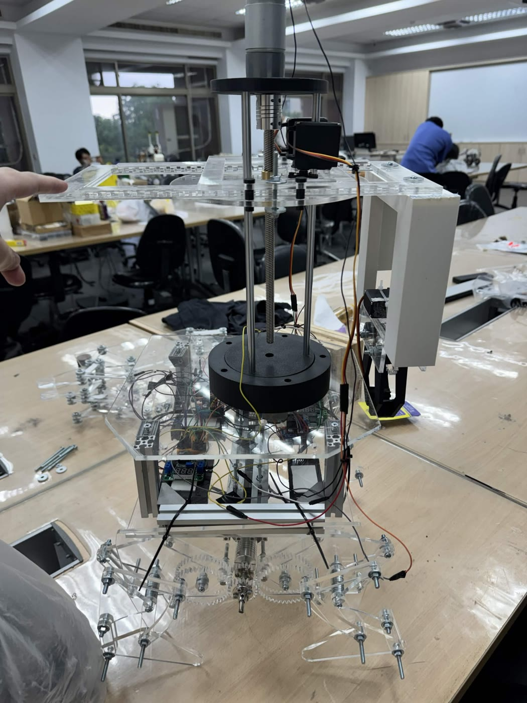

Interactive simulation · 互動模擬
Drive the robot yourself with the same single-letter commands the real one used, switch between nine camera views, and cut the wireless link to watch the 500 ms safety stop. Left alone, it plays the whole pick-and-hand-off sequence. Made for a computer screen; the interface is in Chinese.
用跟實機一樣的單字元指令自己遙控、切 9 個視角，按「斷線」看 500 ms 逾時停止；放著不動會自動導覽整段流程。請用電腦開。


Command protocol, pin map, PWM and servo values, the 0.25 s resend and the 500 ms timeout follow the robot's control program. Link lengths, travel ranges and the field layout are estimated from photos and CAD.
44-second tour · 44 秒導覽
The real robot · 實機



Bench test with the Xbox controller: the robot is raised so the legs run free while the arm is driven.
實機測試：用 Xbox 手把遙控，機身墊高讓腳懸空，操作手臂升降。
How it works · 怎麼運作
| Legs · 足部 | Eight Jansen-linkage legs, four per side, each side driven by one motor through a crank. Speeding up or slowing the left and right motors separately corrects drift. 八隻 Jansen 連桿腳，一側四隻、各由一顆馬達經曲柄帶動；左右馬達分別調速修偏。 |
|---|---|
| Arm · 手臂 | Three axes: lead-screw lift, turntable rotation, and horizontal reach driven by two continuous servos turning in opposite directions. 三軸：螺桿升降、轉盤旋轉、兩顆 360° 伺服反向同步驅動的水平伸縮。 |
| Gripper · 夾爪 | Two jaws geared together so they always open and close by the same angle. 左右同步齒輪，兩爪等角反向開合。 |
| Hand-off · 交接 | Parts wait in a box with a sloped floor; a servo gate opens and they slide onto the EV3's tray. 斜底暫存盒，伺服閘門一開，零件滑進 EV3 托盤。 |
| EV3 robot · EV3 運輸 | One light sensor with proportional steering follows the line; a side ultrasonic sensor finds the unloading platform and stops the robot there. 單光感比例控制循跡，側向超音波找到卸貨平台就停車卸貨。 |
Electronics and control (my part) · 電控（我負責的部分）
| Control chain · 控制鏈 | Xbox controller → Python bridge on a laptop → HC-05 Bluetooth (9600 baud) → Arduino UNO + Sensor Shield V5 → two L298N motor drivers and four continuous servos. |
|---|---|
| Command protocol · 指令 | One character per action (F/B/L/R walk, U/D lift, E/Q rotate, A/Z reach, O/C gripper, G/K gate, X emergency stop), so every function can be tested from a serial monitor. 每個動作一個字元，用序列埠就能逐項測。 |
| Fail-safe · 斷線保護 | Held buttons are resent every 0.25 s; if the UNO hears nothing for a group for 500 ms, it stops that group. A dropped link or a closed program cannot leave the robot running. 按住每 0.25 s 重送，500 ms 沒收到就停該組，斷線不會暴走。 |
| Power · 電源 | Separate battery packs: one for the DC motors, one stepped down to 5 V (LM2596) for the logic and servos, all on a common ground; motor current runs on heavy wire, not breadboard jumpers. 馬達與控制端分兩組電池、共地，大電流走粗線。 |
| Before building · 組裝前 | Pin map, protocol, limit-switch logic, emergency stop and command timeout were simulated in Wokwi before any hardware was wired. 先在 Wokwi 模擬過腳位、協定、急停與逾時，才接實機。 |
Mechanical design of the legs, arm and gripper, and the EV3 robot, were done by teammates.
足部、手臂、夾爪的機構與 EV3 運輸機器人由組員負責。
CAD motion studies · CAD 動作
Jansen leg gait · arm lift and rotation · gripper opening and closing (SolidWorks).
Jansen 連桿步態 · 手臂升降與旋轉 · 夾爪開合。